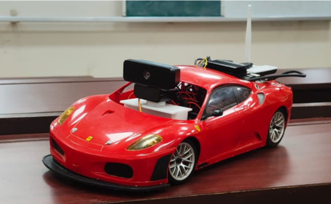
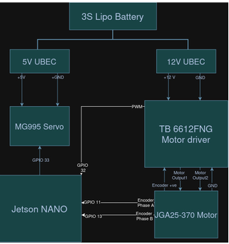
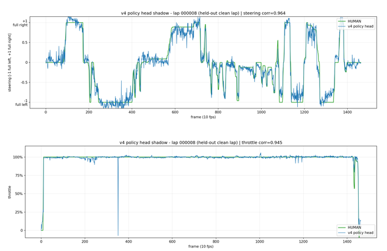

Abstract
McQueen is a small-scale autonomous driving platform built to explore how far vision-based driving can be pushed on a physical RC car. The car uses a single RGB camera as its only source of visual input, with a Jetson Nano handling the onboard side of the system and communicating with a remote NVIDIA RTX 4090 for neural-network computation. A pretrained vision-and-temporal driving model is used as the backbone, with a lightweight action head trained specifically for McQueen's steering and throttle controls. The resulting predictions are sent back to the car and converted into real actuator commands, closing the loop between what the camera sees and how the car moves.
The project is as much about building the system around the model as it is about the model itself: collecting usable driving data, adapting a large pretrained network to a much smaller vehicle, maintaining temporal context, moving video and commands between two machines, and getting the whole pipeline to work reliably on physical hardware. McQueen is ultimately an experiment in taking a model that exists as numbers on a GPU and making it drive a real car.

Self Driving
Self-driving, at its core, is a feedback problem: a vehicle observes its surroundings, uses those observations to decide what it should do next, applies that decision through its actuators, and then observes the new state of the world again. In a vision-only system, the only external information available to the vehicle comes from cameras. A camera produces a sequence of 2D images, but the vehicle needs to infer everything it needs for driving from those images — where the road is, how it is curving, where other vehicles and obstacles are, how the vehicle itself is moving, and what actions are likely to keep it on the intended path. Traditional camera-based autonomous driving systems often deal with this by building several intermediate representations: neural networks can detect lanes, road boundaries, vehicles, traffic signs, or free space; other models can estimate depth or motion; a planner can then use these predictions to determine a trajectory; and a controller converts that trajectory into steering, throttle, and braking commands. This approach makes the individual pieces easier to inspect and reason about, but it also means errors can accumulate as information moves from one stage to the next. Another approach is end-to-end driving, where a learned model takes camera observations and predicts driving actions directly, or predicts a compact intermediate representation that is then used for control. Temporal information becomes especially important here. A single image tells the model what the road looks like at one instant, but driving decisions depend on how that scene is changing over time. By processing consecutive frames and maintaining some form of temporal state, a model can use recent observations when deciding its next action. Regardless of how much of the stack is learned, the deployed system is still a closed loop: camera frames arrive continuously, the model produces an action, the car moves, that movement changes the next frame, and the process repeats. McQueen follows the most compressed version of this idea. There is no LiDAR, no depth input, and no separate perception system feeding a hand-built planner. The model receives RGB frames, uses visual and temporal features to understand the driving context, and produces the steering and throttle commands needed to control the car. The challenge is therefore not simply getting a neural network to recognize a road, but getting a sequence of images to contain enough information for the system to make the next physical control decision reliably.
Pitstop
Motors
The car uses a DC motor with encoder (JGA25-370) and a servo motor (MG995). The DC motor enables both the back wheels to move, as and when throttle commands are sent to it. The servo motor enables steering, with our own configured values we can control the degree of turning.
Mechanics
DC motor with encoder has a rotational speed of 620 RPM. The gearbox that we modified uses differential drive — making both wheels on a common axis spin independently at different speeds.
Electronics
3S Lipo Battery powers the servo through a 5V UBEC and the motor through a 12V UBEC. The signal wire of the servo is connected to GPIO 33 of the Jetson Nano. The motor driver has its Vm connected to 12V and Vcc and STBY connected to 3.3V, PWMA AIN1 AND AIN2 are connected with the Jetson. The motor with encoder has 6 connections — encoder’s positive is at 3.3V, encoder’s phase A and B are connected to the jetson, the motor’s positive and negative are connected to the motor driver’s AOUT1 AND AOUT2, and ground is connected to common ground.

Lap 1 : openpilot
What is openpilot?
openpilot is an open-source driver-assistance system developed by comma.ai that enables a vehicle to perceive its surroundings, understand the road, and make driving decisions with minimal human intervention. At a high level, it takes information from the vehicle's cameras, processes that information through a combination of neural networks and conventional software, and turns its understanding of the driving environment into driving actions. One of the most important components of openpilot is its vision system, which processes camera images and extracts meaningful information about the world around the vehicle. Instead of looking at every frame independently, openpilot is designed to reason about sequences of frames, allowing it to understand not only what the road looks like at a particular moment but also how the scene is changing over time. This temporal understanding is crucial for driving: the system needs to recognize road geometry, track surrounding vehicles, understand the vehicle's position, and anticipate how the driving scene is evolving rather than simply reacting to individual images. At the heart of this process is a neural network that transforms raw camera input into a learned representation of the driving environment. This representation can then be used by different parts of the system to make predictions and ultimately determine how the vehicle should behave. However, openpilot itself is much more than just this neural network. It is a complete driver-assistance stack, bringing together perception, prediction, planning, control, vehicle interfaces, and safety mechanisms into a single system. The neural network provides the system with a learned understanding of the visual world, while the rest of the stack uses that information to translate perception into real-world vehicle behaviour. What made openpilot particularly interesting for McQueen was this learned visual representation. Rather than building our visual perception system entirely from scratch, we use the same pretrained backbone and learned weights that form the foundation of openpilot's visual understanding. From there, we adapt that visual representation to the much smaller and more specific problem that McQueen has to solve: driving an RC car.
Frozen Backbone
For McQueen, the core of our policy is not a model inspired by openpilot, it is openpilot's actual pretrained driving backbone, kept completely frozen throughout training and inference. The model we use is comma.ai's larger big_driving_supercombo variant, internally referred to as “chestnut”. In deployment, the backbone runs in its native ONNX format through ONNX Runtime on CUDA, rather than through PyTorch. We initially converted the model to PyTorch for the training pipeline, but the onnx2pytorch conversion does not successfully export this particular model, so the live system uses ONNX Runtime directly. The backbone expects the structured input used by the original driving stack: two YUV-packed camera inputs, a rolling buffer containing its previous hidden states for temporal context, and three auxiliary inputs — desire pulse, traffic convention, and action timestamp — that have no meaningful signal for McQueen and are therefore zeroed. From these inputs, the network produces its native output vector, from which openpilot normally extracts a range of predictions including lane information, lead-vehicle detections, and trajectory-related outputs. McQueen, however, does not need to reproduce that entire planning stack. Instead, we extract the model's 512-dimensional recurrent hidden state, which can be thought of as a compact, temporally aware representation of what the backbone has understood about the current driving scene. Rather than turning that representation into a trajectory using openpilot's original control pipeline, we pass it into our own small trainable action head, which learns to map the 512-dimensional representation directly to the two actions McQueen actually needs: steering and throttle. This makes the division of responsibility surprisingly clean: the massive, pretrained openpilot network is responsible for understanding the visual scene and maintaining temporal context, while our lightweight head learns how McQueen should respond to that understanding. One implementation detail we are still treating carefully is the exact location of that 512-dimensional hidden-state slice: the training and live exports currently expose slightly different output layouts, so the corresponding offsets need to be verified against the exact ONNX model used in deployment rather than assumed to be interchangeable. It is a small detail on paper, but when the rest of the policy is built entirely on top of those 512 values, getting that slice right is absolutely critical.
Lap 2 : The Link
Getting the connection
The networking problem comes from the physical separation between the car and the machine running inference. McQueen runs on a Jetson connected through a mobile hotspot, while the RTX 4090 running our inference pipeline is located elsewhere on the internet. The two machines therefore need to establish a direct connection despite being behind separate networks and, in the Jetson's case, carrier-grade NAT. Our first choice was WebRTC, which is designed for exactly this kind of real-time peer-to-peer communication. However, the versions of GStreamer and libnice available on the Jetson could not reliably gather the server-reflexive ICE candidates required to establish a connection through the hotspot's NAT. We therefore implemented the underlying connection mechanism ourselves. Both machines first contact a STUN server to determine the public IP address and port through which they are visible externally. These addresses are then exchanged through a lightweight WebSocket broker, which serves only as a signaling layer to introduce the two endpoints. Once the addresses have been exchanged, both sides begin sending UDP packets directly to each other, allowing the NAT mappings to be established and a direct path to form between the Jetson and the 4090. After this point, the WebSocket broker is no longer involved in the data path. The car and the inference machine communicate directly over a single UDP socket, providing the low-overhead connection required for the real-time driving loop.
Closing the Loop
With the connection established, the same UDP socket carries both the camera stream travelling from McQueen to the 4090 and the control commands travelling back. The Jetson continuously captures frames from the camera and encodes them into H.264 in software; hardware encoding through NVENC was found to stall on the particular Jetson board we were using, so encoding is performed on the CPU instead. We also handle RTP packetization ourselves rather than relying on the standard GStreamer payloader, giving us direct control over the timestamps associated with each frame. Before the RTP packets for a frame are transmitted, the Jetson sends a small metadata packet containing the frame ID and its actual capture timestamp. This allows the receiving side to associate the encoded image with the exact moment at which it was captured. On the 4090, the incoming stream is jitter-buffered and decoded before being passed over a separate localhost connection to an isolated inference process running the neural network. The separation is intentional: the CUDA inference stack and the GStreamer pipeline were prone to interfering with one another when running inside the same process, so isolating inference keeps the two components independent. Once inference produces a steering and throttle prediction, those values are sent back through the same UDP connection. The Jetson receives them, converts them from the model's output space into the corresponding servo and motor commands, and passes them to the processes responsible for controlling the hardware. The complete cycle therefore runs continuously: a frame is captured on the Jetson, transmitted to the 4090, processed by the model, and returned as an actuator command, after which the process begins again with the next frame. The network is what allows the physically separated compute and control systems to function as a single driving pipeline.
Lap 3: Learning Curves
First Attempts
The model's trunk was never trained by us. We use comma.ai's driving_supercombo as a frozen vision-and-temporal backbone and train only a small action head on top of it. The first baseline was deliberately simple: a small MLP trained on DonkeySim data to map the frozen representation to steering and throttle. The zero-shot model barely drove at all, but the trained head was already a large improvement. Its validation loss dropped substantially, and the difference was visible in simulation too. Without a throttle cap it would accelerate straight into a wall; with one, it could actually stay on the track and make reasonable steering decisions. We then tried comma's larger Supercombo export, nearly two gigabytes, with a LoRA-adapted head. The training curves looked good, but the resulting driving did not. That experiment ended up being more useful than the successful ones because it showed how little a loss curve means when the labels are wrong. We had a unit mismatch in the training data, and the model was faithfully learning targets that made no sense for McQueen. A good-looking curve had given us a bad model.
Around the corner
The version we eventually settled on went back to the simpler frozen trunk and small action head, but fixed the temporal part of the training setup. The hidden state was carried forward continuously instead of being reset between batches, and the same stateful behavior was kept during inference. We also had to preserve the ordering of frames within each session; otherwise the temporal component was being asked to learn from sequences that weren't actually sequences. At that point, the curves we cared about weren't just the ones in the training logs. We looked at whether improvements in validation loss actually translated into better trajectories in simulation: holding a line, taking turns, and recovering from small deviations. That became the more useful measure of whether a checkpoint was worth putting on the car. We're still not completely done with that verification. The slice of the model output we use as the hidden state differs between the export we trained against and the one currently deployed. Until those 512 values are checked directly, there is still a question mark over whether the deployed model is receiving exactly the representation the action head was trained on. The model is learning. The remaining question is whether it has learned the right thing well enough to take a real McQueen around a real curve.

Murphy's Law
Can’t check enough times
Hardware gave us a few failures that were much harder to diagnose than they should have been. We spent a full bench session convinced the encoder setup was faulty, even though the encoder was wired directly to the GPIO and the motor driver wasn't involved. The actual problem was our documentation: the wire colours we'd written down were wrong for the specific encoder we were using. We were debugging a hardware fault that existed because we had documented the hardware incorrectly.
The Jetson caused a different kind of problem. It would periodically disappear from the network, and after checking the software side we eventually traced it to a dead power bank. There was another problem waiting behind that one: our autostart script lived in /tmp, which is cleared on reboot. So whenever the Jetson restarted, the script responsible for bringing the system back online was gone as well. Neither issue was particularly complicated once we knew where to look, but both cost us time because we were initially looking at the wrong layer.
We also managed to kill a motor driver early on by powering it directly from the battery. The board was not rated for the current the motor could draw, particularly during a stall. That pushed us toward separating the motor and servo power supplies and paying much closer attention to the actual current requirements of the components rather than just their nominal voltage ratings.
Read between the curves
The most important failure was much less visible. We trained the larger Supercombo-based model and watched the validation loss fall consistently across the epochs. On paper, the training run looked great. In simulation, the model barely drove. The problem turned out to be the labels: our target values were in the wrong units. That meant the model wasn't failing to learn. It was learning exactly what we had asked it to learn, and what we had asked for was wrong. A decreasing loss curve couldn't tell us that because the loss was being calculated against the same incorrect targets throughout training. The zero-shot model gave us another useful sanity check. With the frozen trunk and no trained action head, it produced saturated commands rather than useful driving behaviour. That prompted us to inspect the actual ONNX graph and outputs instead of assuming that the comments and interfaces around the model accurately described what was happening. That check also exposed how easy it was for an apparently well-defined model interface to go unverified.
These were probably the most useful failures in the project because they were both examples of the same problem at different levels: the system can behave consistently and still be wrong. Sometimes the thing that needs debugging isn't the model or the hardware, but the assumption sitting between them.
Finish Line
McQueen is now a working vision-based autonomous driving system running on a physical car. An RGB camera provides its only visual input, the Jetson handles the onboard processing and communication, and the RTX 4090 runs the neural-network inference. The model uses a frozen pretrained vision-and-temporal backbone with a McQueen-specific action head trained on driving data, and the complete pipeline has been run end-to-end on real hardware. The policy has already produced steering and throttle commands from live camera input and successfully taken turns on the track. What we haven't achieved yet is a consistently clean lap from start to finish. The system can drive, but it still has room to become reliable enough to handle the entire track without intervention. The next step is driving a full lap completely by itself.